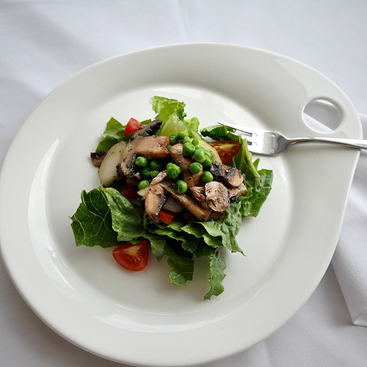

Notes
Serving Size
3 ounces (85 grams)
Yield
10 servings
Chef's Note
As much as possible, salad greens should be dressed à la minute. Geographic Region France
Marinated Mushroom Salad (Salade de Champignons)
Ingredients
Main Dish
- 2 pounds Button mushrooms, cleaned and sliced thin
- 8 ounces Red bell pepper, washed, seeded, diced into ¼-inch (0.63-centimeter) pieces
Dressing
- 6 ounces Canola and Olive oil blend
- 2 ounces White vinegar
- 2 ounces White wine
- 2 ounces Lemon juice
- 1 ounce Sugar, granulated
- 1 ounce Basil, fresh, washed, chopped
- 1 ounce Oregano, fresh, washed, chopped
- ¼ teaspoon Marjoram, fresh
- Salt, To taste
- Black pepper, cracked, To taste
- 3 heads Romaine lettuce, washed, cut or shredded into fine strips
- 8 ounces Green peas
Preparation
- Gather all the ingredients and equipment.
- Combine the mushrooms with the diced red peppers in a mixing bowl and refrigerate.
- In a mixing bowl, vigorously mix the oil with the sugar, basil, oregano, marjoram, salt, pepper, white vinegar and white wine to create the dressing. Then blend ¾ of the vinaigrette with mushrooms and peppers.
- Toss the romaine lettuce in the remaining vinaigrette. Chill the salad plates and line with shredded lettuce. Arrange the mushroom salad on top of the lettuce, and garnish with the green peas.